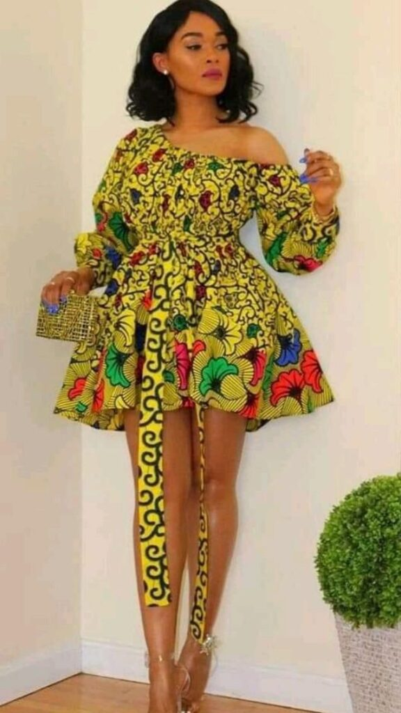

Welcome to KellyAfriWear:
Do you love to wear traditional cloth as a Lady?

At KellyAfriWear, we bring you the finest collection of African wear for women, blending tradition with contemporary fashion.
Our mission is to celebrate the rich cultural heritage of Africa through stunning,
handcrafted garments that make every woman feel beautiful and empowered.
Explore our diverse range of African attire, including:
Ankara Dresses:
Vibrant and bold prints that make a statement.Kente Gowns:
Elegant and timeless pieces for special occasions.Dashiki Tops:
Comfortable and stylish for everyday wear.Headwraps and Accessories:
Perfect finishing touches to complete your look.
Why Choose KellyAfriWear?
Authenticity:
Each piece is crafted with love and care, reflecting the true essence of African culture.Quality:
We use premium fabrics and materials to ensure durability and comfort.